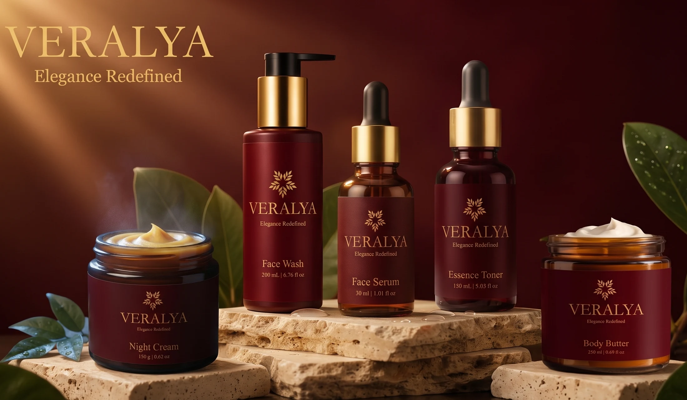
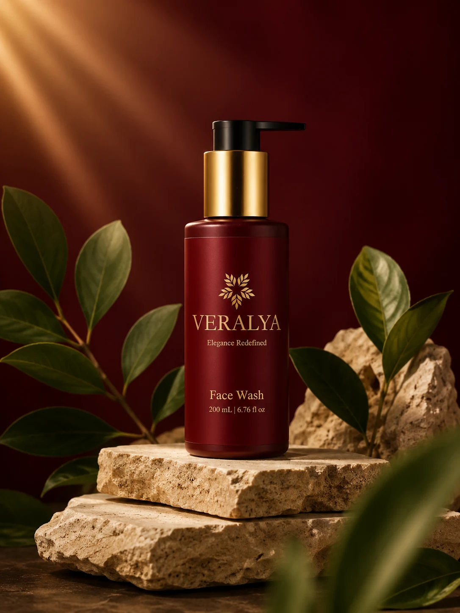
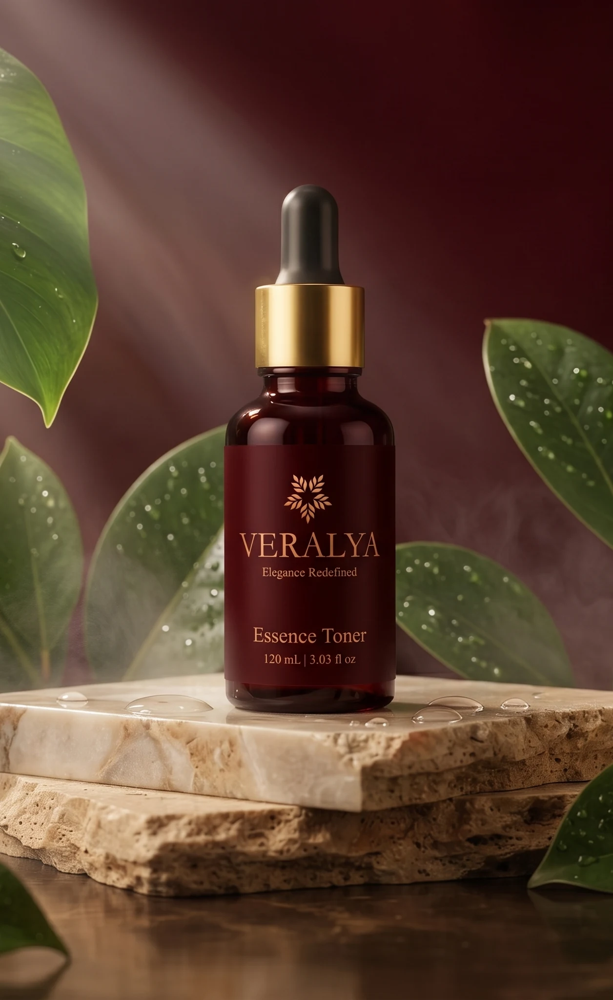
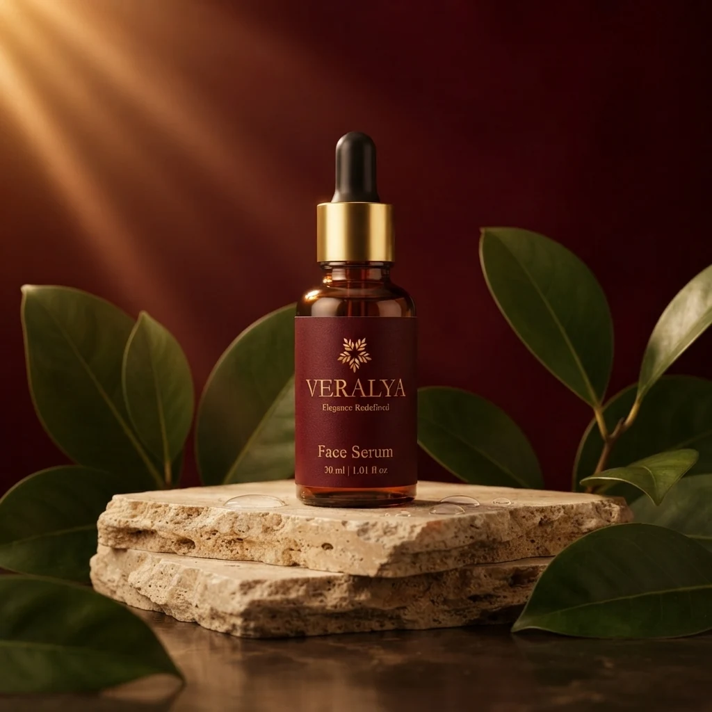
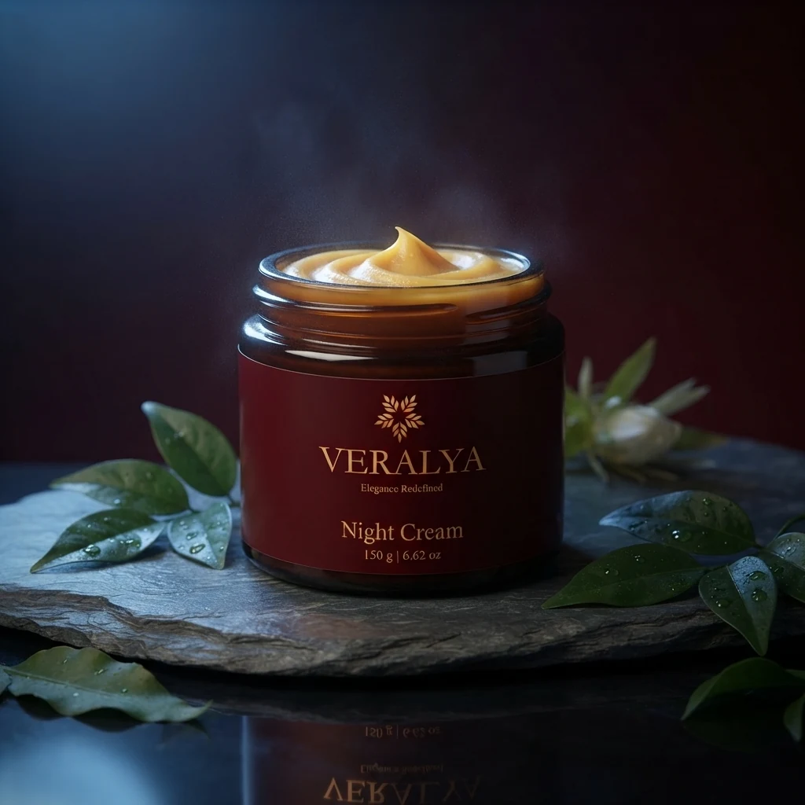
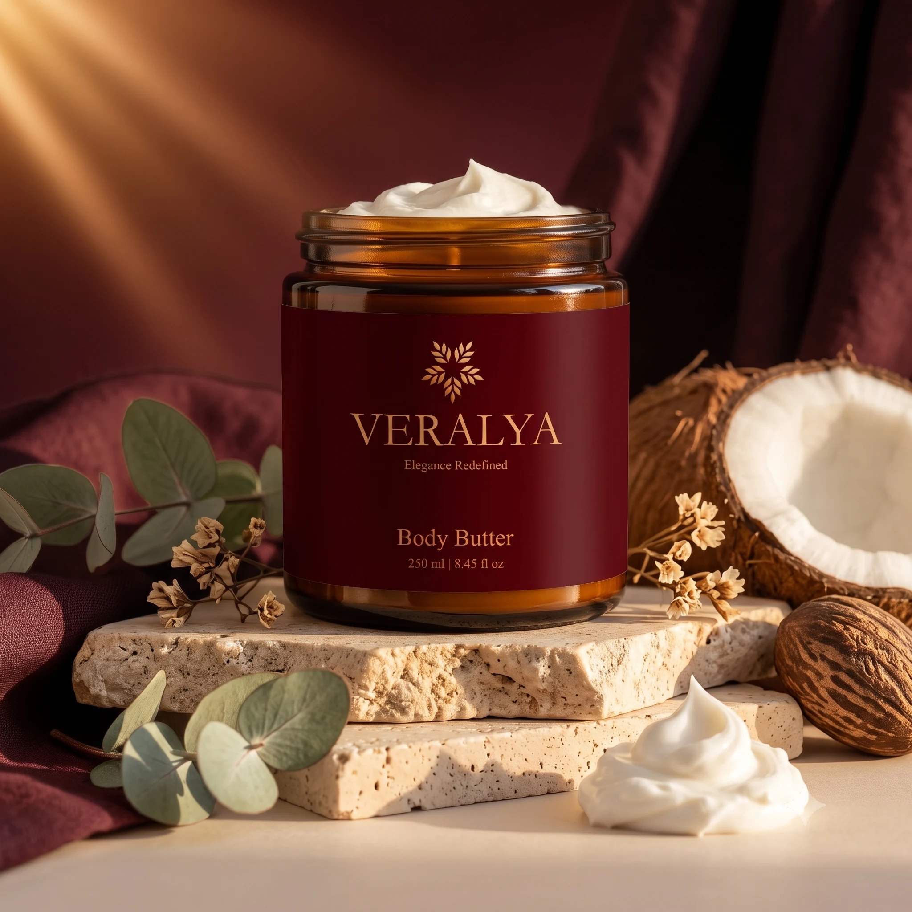
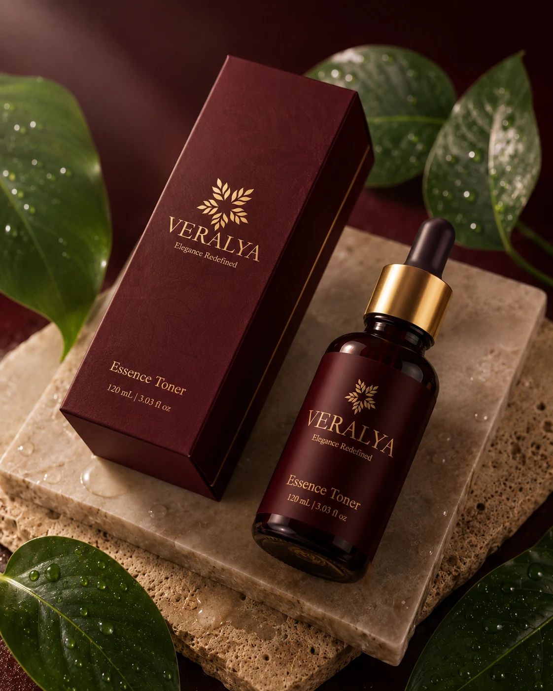

Elegance
Every detail is designed to feel refined, graceful, and timeless.

Luxury botanical skincare · Original brand concept
Elegance Redefined
A premium skincare brand created to transform everyday self-care into an elegant and refined ritual.
Original Brand Concept and Design
VERALYA is an original premium skincare brand created to celebrate natural beauty through refined design and thoughtful self-care. Inspired by botanical elegance, the brand combines deep burgundy tones, warm gold details, and sophisticated packaging to create a luxurious and timeless identity.
A complete identity and packaging project, imagined from first insight to final visualization.
The values within every detail
Every detail is designed to feel refined, graceful, and timeless.
The visual identity is inspired by botanical ingredients, natural textures, and gentle skincare rituals.
VERALYA transforms everyday skincare into a meaningful moment of personal luxury.
Five considered rituals

Cleanse01 — 05
The VERALYA Face Wash gently cleanses away everyday impurities while leaving the skin feeling fresh, soft, and beautifully balanced.

Prepare02 — 05
The VERALYA Essence Toner gently refreshes and prepares the skin, helping restore a feeling of softness, hydration, and balance.

Nourish03 — 05
The VERALYA Face Serum delivers a luxurious layer of targeted care designed to leave the complexion feeling nourished, smooth, and radiant.

Renew04 — 05
The VERALYA Night Cream wraps the skin in comforting nourishment as part of an elegant evening skincare ritual.

Indulge05 — 05
The VERALYA Body Butter envelops the skin in rich, velvety nourishment, leaving it feeling soft, smooth, and deeply pampered.
A tactile expression of luxury
The VERALYA packaging system was designed to communicate elegance, quality, and botanical luxury. Deep burgundy creates a rich and memorable visual presence, while gold detailing introduces a sense of refinement and premium craftsmanship.

A restrained palette allows the tactile qualities of the packaging to lead.
The emblem
The VERALYA emblem is inspired by organic leaves arranged in a refined floral form. It represents natural beauty, balance, growth, and elegance.
Colour system
Typography
From concept to complete world
A complete original branding project developed through strategy, craft, and meticulous visual storytelling.
Beauty, refined
through every detail.
The final perspective
VERALYA demonstrates how a consistent visual identity can transform a new skincare concept into a sophisticated and memorable brand experience.